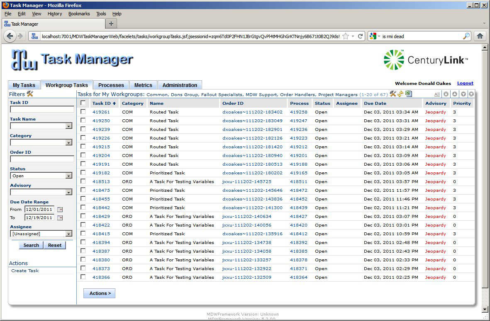
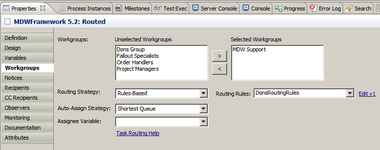
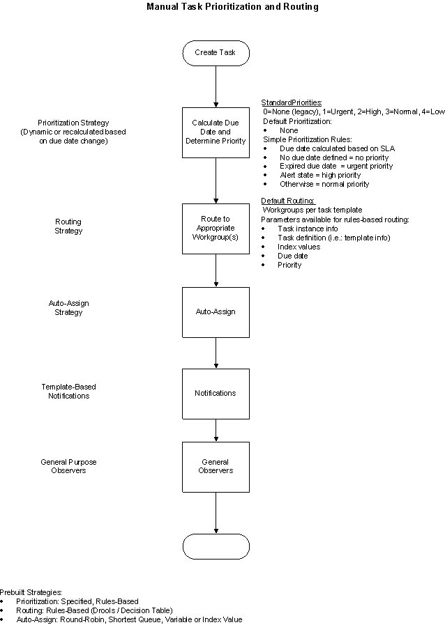

Task Routing
Workgroup Routing
MDW users can belong to one or more Workgroups (sometimes referred to simply as Groups or User Groups) for the purpose of queueing or "bucketizing" Manual Task instances.
Workgroups are managed by end users via the Task Manager webapp Admin GUI.
On the Task Manager Workgroup Tasks tab users have visibility to those tasks that are relevant for their group.

In MDW 5, task instances can be dynamically routed to appropriate workgroups based on based on runtime criteria such as Due Date and Priority.
The starting point for this routing is the task/workgroup relationships specified in the task definition (or Task Template in MDW 5 vernacular).
By default task instances are associated with the group(s) spelled out in the template.
However, this default behavior can be overridden by specifying a Task Routing Strategy on the Workgroups property tab for a task activity in Designer:

Strategies are provided in the form of Java classes that implement the RoutingStrategy interface.
One routing strategy implementation is provided out-of-the-box with MDW:
- Rules-Based:
Determines routing based on a configured rules definition Workflow Asset (either a Drools DRL document or an Excel decision table).
To select a pre-built routing strategy, use the dropdown on the Manual Task activity Workgroups tab (see screenshot above).
For a completely custom strategy, simply type your fully-qualified implementor class name in the same combo box.
However, a high degree of customization can be achieved through the prebuilt rules-based strategy.
The task Due Date and Priority values are available as inputs to your rules-based or custom strategy.
Task template attributes and indexed process variable values are also available as inputs (through the getParameters() method).
Assignment
After workgroup routing, the next stage in the manual task lifecycle is usually assignment, whereby a task instance is assigned to a particular individual for completion (see flow diagram below).
The Task Manager webapp provides a user interface for users to manually assign or claim tasks individually or in bulk.
However, the assignment step can be automated as well by specifying an Auto-Assign Strategy (see Designer screenshot above).
As with routing, the strategy implementor for auto-assign can be a custom Java class, or one of the MDW built-in options:
- Round Robin:
Cycles through each member of the workgroup(s), assigning to the next user in alphabetical order.
- Shortest Queue:
Assigns to the person in the workgroup(s) who presently has the lowest number of open tasks in progress.
- Process Variable:
Consults a process variable value to determine the assignee.
